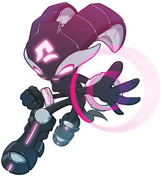

Shade The Echidna
 De: La Frikipedia, la enciclopedia extremadamente seria.
De: La Frikipedia, la enciclopedia extremadamente seria.
Shade es una película malísima protagonizada por un Stallone viejuno fuera de forma guerrera equidna ascendida a Procurator (equivalente a teniente de alto rango) en las tropas de los Merodeadores, una facción de terroristas emos reprimidos dentro de armaduras cyberpunk al mejor estilo gótico. A pesar de su trabajo como espía y agente de reconocimiento, no pudo salvar a su pelotón del terrible destino de quedar atrapados en la Jaula de las locas del Crepúsculo donde permanecieron exiliados desde hace 4.000 años (para pasar el tiempo la agarraron entre todos y le dieron por atrás).
Historia
Shade The Echidna es la Comandante en Jefe del FRU ejército de Merodeadores del Clan Nocturnus, un linaje de guerreros equidnas simil kevlar semiautomáticas de alta Zona Fantasma donde los criminales de cada Argus, una deidad similar a Yivo (sí, el mismo que salió en Pir'Oth Ix (mas conocido como Ix a secas, porque el nombre en Imperator Ix envía a Shade y a sus fuerzas "Marauder" secretamente a tomar algunas de las viejas bases militares del Dr. Eggman que habían caído en deshuso por quedar obsoletas tras ser destruídas por Sonic en tantos juegos anteriores que ya perdimos la cuenta de cuantos son, entre las cuales se incluyen las ruinas abandonadas de Metropolis de Fritz Lang Sonic 2, y así las cosas, los Marauders comienzan a reunir putas para hacer una fiesta las Esmeraldas del Caos. Tails y Knuckles intentan detener a las tropas de Shade pero los Merodeadores consiguen hasta la última Chaos Emerald y finalmente Shade secuestra a Knuckles en Mystic Ruins, obviamente para obligarlo a tener sexo con ella.
Knuckles quedó en shock la cuando vio a Shade porque era la primera vez que veía a una mujer... de su misma especie (vale aclarar ¬¬).
Sonic y compañía sólo descubren la verdadera naturaleza de los Merodeadores en Blue Ridge Zone (copia barata de Namek), cuando Shade se revela como una equidna, dejando a Knuckles en shock porque no sabía que había otros de su misma especie aún con vida (se ve que Shade lo obligó a Knux a tener sexo con la armadura puesta y hasta entonces él creía que estaba follando con un robot). Después de perseguirla a Angel Island (siempre terminan llendo ahí ¬¬), Sonic & Knuckles presencian como Shade tiene un enfrentamiento con su Imperator, a lo que Knuckles salva su vida después de que la Procuradora Shade es atacada y casi muere al caer por un lado de la isla (evidentemente Knux siguió haciendo cochinadas con Shade). En las ruinas de Metropolis, Shade se compromete a casarse con Knuckles colaborar con los héroes, porque aunque sin duda quiere ver el Clan Nocturnus rescatado de la Jaula de la Locas del Crepúsculo, la contienda con Ix fue por la intención del Imperador de aplastar cualquier otra raza en el planeta (otro que se cree Hitler), cosa que a Shade no le gustó (porque ella le va al sexo interracial)[3]. Así las cosas, Shade desertó de su comando terrorista gótico de equdidnas tecnocráticos emo-reprimidos y se unió al estupendo grupo de anarcocomunistas ateos neohippies y punkitos buenrollistas integrados por Sonic & Co., o sea... Shade dejó de ser Sith y se hizo Jedi, demostrando que sí es posible retornar del Lado Oscuro de La Fuerza.
Ahora en el Sonic Chronicles: The Dark Brotherhood, de la cual hicieron un videojuego para Nintendo DS pero obviamente patrocinado y comercializado por SEGA.
Habilidades y Poderes
Después de haber estado entrenando bajo la tutela de Darth Pir'Oth Ix en la milicia de los Nocturnus, Shade se convirtió en una luchadora disciplinada y poderosa (como Candice Michelle) entre los soldados del Clan Nocturnus. Incluso el líder de su clan, Lord Pir'Oth Ix, tiene las habilidades de Shade en alta consideración (debe ser muy ardiente en la cama) y la reconoce como su mejor guerrera (eso ya lo dice todo). Otra prueba de las habilidades sexuales de Shade es que ella misma ha demostrado ser capaz de completar incluso las misiones más difíciles que se le dio durante su tiempo con el Clan Nocturnus, y podía hacerlo sin pestañear (estaba drogada), debido a que sus poderes provienen del Lado Oscuro de La Fuerza, como los de todos éstos Merodeadores al mando de Imperator Pir'Oth Ix, que en definitiva como vemos son una facción de Siths capaces de controlar los midiclorianos a su merced.
 Shade con la armadura de
Batman a punto de lanzarte una bola de
Ki similar al
Hadoken (ya mezclan cualquier cosa ¬¬).
Como es agente y espía del clan Nocturnus, Shade se muestra especialmente sobresaliente en el arte del sigilo y la infiltración, y es capaz de colarse a través o por detrás incluso del más duro de los enemigos (que no es lo mismo que decir que los enemigos le dan de lo mas duro por detrás). Las fuerzas enemigas no pueden detectarla, ni oírla, ni verla, ya que es tan sigilosa como un armadura de F-117 Stealth del Pentágono, que a su vez éstos la tenían en el Área 51 donde guardan la tecnología que le robaron a los alienígenas como Shade, o sea que es todo un círculo vicioso...).
Cuando la presión en el combate es directa, en lugar de utilizar el elemento de sigilo, Shade es capaz de mantenerse por su cuenta en una batalla a través de su entrenamiento militar, ya que Shade Posee agilidad y rapidez para cargarse a Sonic y a todo el elenco, y tiene gran resistencia física para que pueda darle hostias a cualquiera debido a su entrenamiento de Artes Marciales. En general, Shade se ha demostrado a sí misma como una poderosa luchadora. Para poner mejor sus fortalezas y habilidades en perspectiva, ella fue capaz de derrotar a Knuckles The Echidna en combate, aunque su victoria podría ser minimizada, viendo como Knuckles ya se había gastado en combatir contra algunos soldados clon del Clan Nocturnus antes de pelear con Shade (sin mencionar el hecho de que Knuckles se dejó ganar contra Shade para llevársela a la cama. PD: misión cumplida ;)).
Además de su Espartanos bloquearon el estrecho de las Termópilas con los cadáveres de los Xerxes no pudieran llegar a espartanos de Lionáidas eran los buenos (además de la diferencia de que el Imperator Pir'Oth Ix no es un marica como Xerxes). Shade también tiene un amplio conocimiento y comprensión de las operaciones del clan y de la maquinaria de la ciudad de Nocturne, así como de las razas y las colonias dentro de la Jaula de las Locas del Crepúsculo, que resultó ser invaluable a Sonic y su equipo, porque entre las razas que estaban encerradas en la Twilight Cage había muchos emos, floggers, pijos, bakalas, chetos, canis, y abominaciones similares que Sonic y compañía nunca habían visto en sus vidas porque esos bichos raros no existen en el planeta de Sonic (y fíjate como hasta a un grupo de animales antropomórficos les parecen raros todos estos adefesios).
Al igual que Knuckles, Shade es una equidna, pero eso ya lo sabías XD escaladora muy hábil y puede subir cualquier tipo de muros, no importa de qué material están hechos (see, eso dicen, pero seguro no puede subir un muro de agua, jaja^^). En conclusión, al igual que Knuckles y otros personajes de la saga, Shade es una de las mas poderosas y sin embargo no le dan un carajo de protagonismo para que no opaque el estrellato del erizo azul que es un metrosexual con el pecho depilado y no tiene ni la mitad de los superpoderes que tienen Shade, Knuckles, y otros desamparados similares. A continuación veremos algunos de sus poderes y habilidades que usa para rajársela a todo aquel que no le caiga en gracia:
Armas y Equipamento
Shade demuestra que conoce muy bien la tecnología (a diferencia de Knuckles que no sabe usar ni un iPod) y el armamento avanzado del clan Nocturnus, ya que ésta horda de equidnas tecnocráticos le han robado todas sus armas de alta tecnología a una raza de alienígenas depredadores que a su vez se las robó a otra raza de extraterrestres que habitaban su planeta hasta que los extinguieron, o sea, lo que se dice "transferencia de tecnología" pero por las malas y sin que el bruto que se la roba sepa bien como usarla. Al igual que con los otros soldados en el Clan Nocturnus, el equipo de Shade se centra en la mejora de sus posibilidades en sus misiones, ya sea tanto para el sigilo o para el combate. Al llevar a cabo sus misiones, Shade ha probado de usar drogas sus diversos equipos con gran eficiencia y aprovechar sus efectos al máximo:

La armadura de Shade mola, pero no traducimos el sinograma Klingon de su casco porque dice una guarrada!
- Equipmento de Infiltración: Mediante el uso de la tecnología que le robaron a los Kevlar similar a la de invisibilidad, que Shade usa para mejorar sus ya impresionantes habilidades de sigilo (si fueran tan impresionantes no necesitaría hacerse invisible ¬¬), puediendo pasar literalmente por delante de los ojos del enemigo pasando desapercibida y deslizarse a través de los principales obstáculos con el fin de realizar con eficacia sus misiones. Como vemos un dispositivo que sería muy útil para todos los bullying en la escuela.
- Leech Blades: Shade puede elegir las Psi para crear armas de energía en un evidente Psylocke de súcubo que se hace mas poderosa cada que te corta las pelotas.
- Explosivos: Aunque no se muestra mucho, Shade tiene la costumbre de llevar y usar explosivos, cosa que aprendió en Al-Qaeda, ya que según dicen Shade es musulmana chiíta y por eso siempre se cubría la cabeza para que a los Imanes no les diera ganas de hacerle un bukkake. Como aprendió tácticas terroristas del Talibán, Shade conoce el uso de la dinamita y suele causar alguna que otra explosión para que sus enemigos salgan volando hasta el cielo y le den sus saludos a Alá en persona, por eso ella siempre lleva una granada de mano de colores negro-amarillo, que generalmente las usa durante las maniobras conjuntas con Knuckles, que como él es un comunista revolucionario también sabe de eso de andar haciendo volar por los aires a cualquier facho ultraconservador pro-occidental. Generalmente Shade y Knuckes provocan estas explosiones que no sólo crean una distracción, sino que también dañan a sus oponentes (que por lo visto sus enemigos son judíos sionistas afines al régimen Israelí y nazionalcapitalistas enviados por la CIA para matar a cualquier disidente opositor a la dictadura de Gringolandia).
- Warp Belt: Al igual que todos los demás Mai Shiranui, que tiene dos buenas razones que la hacen mas poderosa que Shade.
- Psiballs: Como dijimos Shade es una psíquica que puede lanzar psiballs, aunque luego se dijo que en realidad sus poderes provienen de sus brazaletes, como si fueran las Bandas de Poder del Fantasma del Espacio, así que no se sabe cual es la verdad pero como vemos Shade tiene un rejunte de poderes y características plagiadas de distintos personajes de otras sagas así que no sería raro que veamos que use su Ki para aumentar su aura rosa y usar el poder del Lado Oscuro de La Fuerza para lanzar un Kamehameha. Por lo visto los chicos de SEGA siguen siendo super-hyper-mega-originales.
- Laser Katana: Por si no hubiera ya suficiente plagio, tenemos que Shade tiene poderes de Jar-Jar Binks).
POW moves
Como todos los personajes jugables en Sonic Chronicles, Shade tiene una selección de movimientos POW (Partido de los Obreros Webones) con los que ataca a los enemigos:
- Cloak: Shade activa su campo de camuflaje, haciéndola más rápida y más
furiosa difícil de ser golpeada en combate. Se activa a través de un dispositivo en la muñeca (como el de Turanga Leela en Kevlar de Batman Shade cuenta con tecnología de avanzada robada a los Predators que puede generar un campo de camuflaje local, que es útil en el combate cuerpo a cuerpo, así como permitir a la equidna moverse sigilosamente (ideal para ir a robar y cometer vandalismos).
Es uno de los personajes mas poderosos que se hayan visto (aunque no lo parezca

).
- Blade Rush: Shade corre como una hija de puta contra el enemigo y se la raja con un brutal combo de cinco hits con su Leech Blade. Dado que el ataque se efectúa con la cuchilla y Shade se acerca al enemigo corriendo, el nombre del combo originalmente iba a ser Blade Runner, pero obviamente no pudieron ponerle así por problemas legales. La Leech Blade es el armamento estándar de la élite militar Nocturnus: un cuchillo de energía de color rosa brillante, que es capaz de chuparle la
verga fuerza a los enemigos y la energía robada es absorbida por el portador de VIH. La técnica Blade Runner Rush hace que Shade dé una puñalada, luego un puñetazo, golpe vertical, y a continuación, paraliza a su oponente, para chuparle el pene la energía vital y reponer su salud al mismo tiempo.
- Echidna Rush: El Sarpullido Equidna es una enfermedad venérea que Shade se contagió por andar haciendo cochinadas con Knuckles. Resulta que Shade y Knuckles se unen
en cuerpo y alma para ofrecer un poderoso ataque que inhabilita la armadura del oponente y también puede dejar al enemigo distraído. Shade lanza una granada explosiva a su enemigo, y, mientras está tambaleando, ella y Knuckles follan como desesperados se ponen cachondos cerca del adversario para golpearlo al mismo tiempo que el rival está aturdido (y aprovechan que está aturdido para hecharse un polvo y pasar el rato).
- Blade Drop: Sonic impulsa Shade en su objetivo de entregar
el culo un ataque de Leech Blade que inhabilita la armadura. Sonic hace la paja el Spin-Dash contra el oponente, y rebota para catapultar por el aire a Shade para proporcionarle al rival un poderoso cuchillazo con el Leech Blade desde arriba (o sea que ahora es Sonic el que se la tumba a Shade).
- Hard Line: Knuckles & Shade se unen
en matrimonio para darle por el culo un ataque aplastante al enemigo que puede distraerlo, y para eso también unen fuerzas con Shadow. Este ataque es bastante impresionante al ser un trabajo en equipo de a tres, lo que en Ménage à trois. En primer lugar, Knuckles le da a Shade por delante arroja a Shade en el aire, en la cúspide de su ascenso, Shadow se teletransporta arriba de Shade y le hace un bukkake, y la lanza aún más alto. Shade luego cae en picada encima del pene de Knuckles oponente, y le da la salto del tigre).
Trivia
- Los equidna, cosa que se confirmó cuando los de Archie Comics lanzaron la adaptación del juego, y mas tarde se supo que los de Noentiendo le decían "Shade The Goat" porque los nintendianos suelen hacerse el Goatse, y por eso se confundieron de nombre a pesar de que no tenía nada que ver con Shade.
Le cortaron el pelo a
Tikal y le pusieron una armadura
ninja, y así crearon a Shade ¬¬
- Shade tiene el pelaje anaranja al igual que Archie Comics, que casualmente es otra equidna que estaba caliente con Knuckles y al igual que Shade, Julie-Su desertó de una facción de equidnas tecnocráticos al mando de un Lord Sith. En el caso de Julie-Su pertenecía a la Dark Legion comandada por Lord Enerjak mientras que Shade pertenece a la Dark Brotherhood comandada por Imperator Ix; obviamente fueron muy originales al crear el argumento del juego, y lo que es peor, se supo que el diseño de la armadura de Shade está basada en otra conocida equidna de Archie llamada Prelate-JS[5].
- Shade es la única de la serie que tiene una armadura completa, aunque también habría que considerar a Excalibur Sonic del Sonic and the Black Knight, pero como el juego fue una cagada ya nadie se acuerda de él.
- Shade es la única personaje jugable en Sonic Chronicles con poderes de drenar la energía vital del enemigo para restaurar puntos de salud, que como sabemos ésa habilidad es el Leech Blade, claramente tributo al conocido movimiento Leech Life de los pokémons del tipo bicho.
Procurator Shade demuestra que se ganó el rango que ostenta: después de vencer a Ix consiguió trabajo de Procuradora y ahora se encarga de hacer auditorías (como Morgan Proctor, cuando no chinga con
Fry).
- Shade es muy similar a Shadow en varios aspectos: Ambos pueden teletransportarse, son físicamente jóvenes aunque son cronológicamente mucho mas viejos (Shadow pasó 50 años congelado en el freezer y Shade pasó 4.000 años en La Jaula de las Locas, pero el Sombra).
- El casco de la armadura de Shade tiene cuernos en tributo a NiGHTS, el Sega Saturn, en lo que resulta otra muestra de como a los chicos de Sega se le agotaron las ideas y se están copiando a sí mismos en forma cada vez mas notoria.
- A pesar de que Shade ahora odia a Ix, se sigue refiriendo a él como "Lord Ix", manteniendo el respeto que le tenía, probablemente porque se siente culpable de haberlo traicionado, mas o menos como los rusos que siguen teniendo la Hoz y el Martillo y la Estrella Socialista en muchos edificios públicos a pesar de que han traicionado a Lenin, a la URSS, a Marx, y a la humanidad en general.
- Shade, al igual que los otros equidnas del Clan Nocturnus incluyendo a su amado
dictador Lord Ix, siempre tienen la cabeza mirando hacia abajo para olerse los genitales ocultar su rostro, razón por la que en un principio costaba identificarlos como equidnas. Su aspecto cabizbajo confirma que sufren de depresión crónica y por lo tanto son todos Emo Sapiens (y por eso se esconden dentro de sus armaduras y viven encerrados en Emolandia donde solo salen de noche).
- Según fuentes confiables (cuando te dicen así es porque no hay ninguna fuente y se lo sacaron de la galera), hay rumores de que Shade mantiene una relación sentimental con Knuckles desde que acabaron de rodar
en la cama Sonic Chronicles: The Dark Brotherhood. Aunque SEGA no lo ha confirmado hay algunos papparazzis que afirman haberles tomado fotos "in-fraganti"[6].
Referencias
- ↑ Aquí tenemos a Yivo...
- ↑ ...Y aquí tenemos a Argus (¿coincidencia?)
- ↑ Shade debe compartir a Knuckles con Rouge
- ↑ Darth Shade con la Espada Laser de los Sith
- ↑ Prelate-JS: Sospechosamente similar a Shade
- ↑ Knuckles haciéndole Reflexología a Shade (si te pone, eres zoofílic@)
Enlaces externos
|
|
 Shooter Shooter
 Terror Terror
 Velocidad Velocidad
 Rol Rol
 Estrategia Estrategia
 Aventuras Aventuras
 Fight! Fight!
 Clásicos Clásicos
 Deportivos Deportivos
 Aventura gráfica Aventura gráfica
 Personajes de videojuegos Personajes de videojuegos
|
Frikipedia 2005-2016, Licencia
GFDL 1.2 - Extraído por FrikiLeaks

{kind=link}
{kind=link}
{kind=link}
{kind=link}
{kind=link}
{kind=link}
{kind=link}